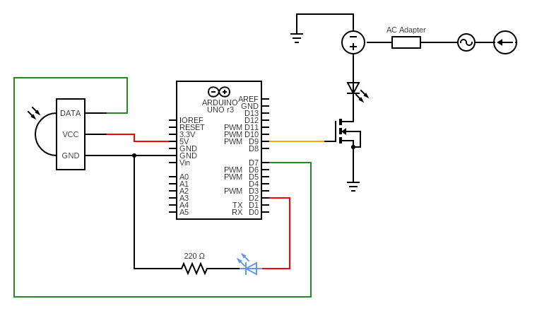

Atharv's Assignment 6: Talking to the web!
Here is all the documentation for assignment 6!
Here is all the documentation for assignment 6!

The schematic of my whole setup is here!
Here are some photos of the breadboard circuit where you can see all the
connections from different angles.
Here is the arduino code to read joystick values:
"// Joystick to web commuication
// Arduino reading two inputs
// Sends to web as a printed array
int x = A0; // xvalue of joystick at A0 pin
int y = A1; // yvalue of joystick at A1 pin
int xval = 0; // initate xval
int yval = 0; // initate yval
void setup() {
Serial.begin(9600); // initiate serial at 9600 baud
}
void loop() {
xval = analogRead(x); // analog read pin A0
yval = analogRead(y); // analog read pin A1
Serial.print(xval); // print to console
Serial.print(","); // print to console
Serial.println(yval); // print to console
delay(1);
}"
Here is the javascript code to read serial and implement them on a local server (or web):
index.html
"
p5.js example
"
Sketch.js
"var serial; // variable to hold an instance of the serialport library
var portName = 'COM7' //rename to the name of your port
var datain; //some data coming in over serial!
var xval;
var yval;
var xpos;
var ypos;
function setup() {
serial = new p5.SerialPort(); // make a new instance of the serialport library
serial.on('list', printList); // set a callback function for the serialport list event
serial.on('connected', serverConnected); // callback for connecting to the server
serial.on('open', portOpen); // callback for the port opening
serial.on('data', serialEvent); // callback for when new data arrives
serial.on('error', serialError); // callback for errors
serial.on('close', portClose); // callback for the port closing
serial.list(); // list the serial ports
serial.open(portName); // open a serial port
createCanvas(1200, 800);
background(0x08, 0x8);
}
// get the list of ports:
function printList(portList) {
// portList is an array of serial port names
for (var i = 0; i < portList.length; i++) {
// Display the list the console:
print(i + " " + portList[i]);
}
}
function serverConnected() {
print('connected to server.');
}
function portOpen() {
print('the serial port opened.')
}
function serialError(err) {
print('Something went wrong with the serial port. ' + err);
}
function portClose() {
print('The serial port closed.');
}
function serialEvent() {
if (serial.available()) {
var datastring = serial.readLine(); // readin some serial
var newarray;
try {
newarray = JSON.parse(datastring); // can we parse the serial
} catch(err) {
//console.log(err);
}
if (typeof(newarray) == 'object') {
dataarray = newarray;
//console.log(dataarray);
}
console.log(datastring);
let allval = split(datastring, ",");
console.log(datastring.length);
xval = map(allval[0], 0, 1023, 0, width);
yval = map(allval[1], 0, 1023, 0, height);
if (datastring.length > 0){
xpos = xval;
ypos = yval;
}
console.log(xpos);
console.log(ypos);
}
}
function draw() {
background(255);
fill(0,0,0);
ellipse(xpos,ypos,50,50);
}"
Here is the javascript code to write to the serial when an event occurs:
index.html
""
sketch.js
""
Here is the arduino code to read serial and turn on an led when event occurs:
" // Web to Arduino communication
// Reads from web input
// If user presses space bar, blue LED is turned on/off
const int Y = 5; // add blue LED setup
int blue = 0; // initiate blue boolean
void setup() {
Serial.begin(9600); // initialize serial communications
Serial.setTimeout(10); // set the timeout for parseInt
pinMode(Y, OUTPUT); // initialize the Blue LED as output
}
void loop() {
if (Serial.available() > 0) { // if there's serial data
int inByte = Serial.read(); // read it
Serial.write(inByte); // send it back out as raw binary data
if(inByte == 32){ // if space is pressed
blue = 1; // switch blue boolean value
}
}
if(blue == 1){ // if blue is true
digitalWrite(Y, HIGH); // turn blue LED on
} else {
digitalWrite(Y, LOW); // turn blue LED off
}
}"
Enjoy this gif I made!